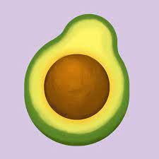

Các loại rau organic cũng có rất nhiều đặc điểm dễ phân biệt với các loại rau khác như: có màu xanh nhạt, không đậm như những loại rau được bón phân hóa học. Khi mua rau hữu cơ, bạn nên để ý đến lá, lá của loại rau này khá dày, cứng, các phiến thì ngắn nhưng cân đối với nhau. Thân rau thì khá mảnh và cứng hơn hẳn so với thân của những loại rau thông thường. Rau hữu cơ có thể bảo quản ở nhiệt độ phòng khoảng 2-3 ngày mà vẫn rất tươi. Nếu thấy rau héo, bạn chỉ cần vẩy thêm nước vào thì rau sẽ tươi lại như thường. Khi ăn, rau hữu cơ có được độ giòn và ngọt tự nhiên. Bạn có thể dùng để chế biến món rau trộn ăn cực kỳ ngon nhờ độ ngọt đó.

Rau oganic
september 14,2016
september 14,2016